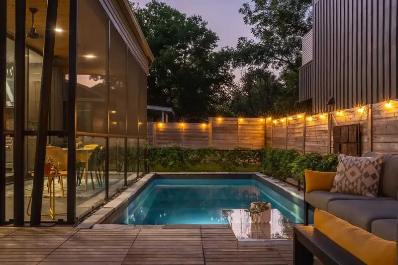
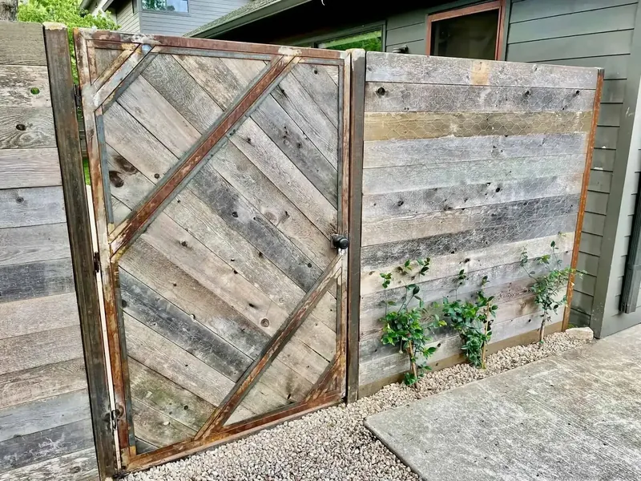
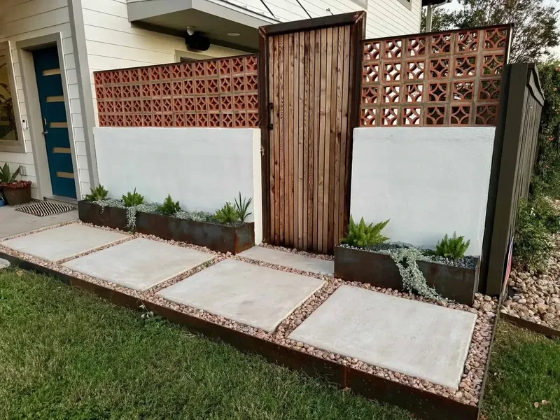
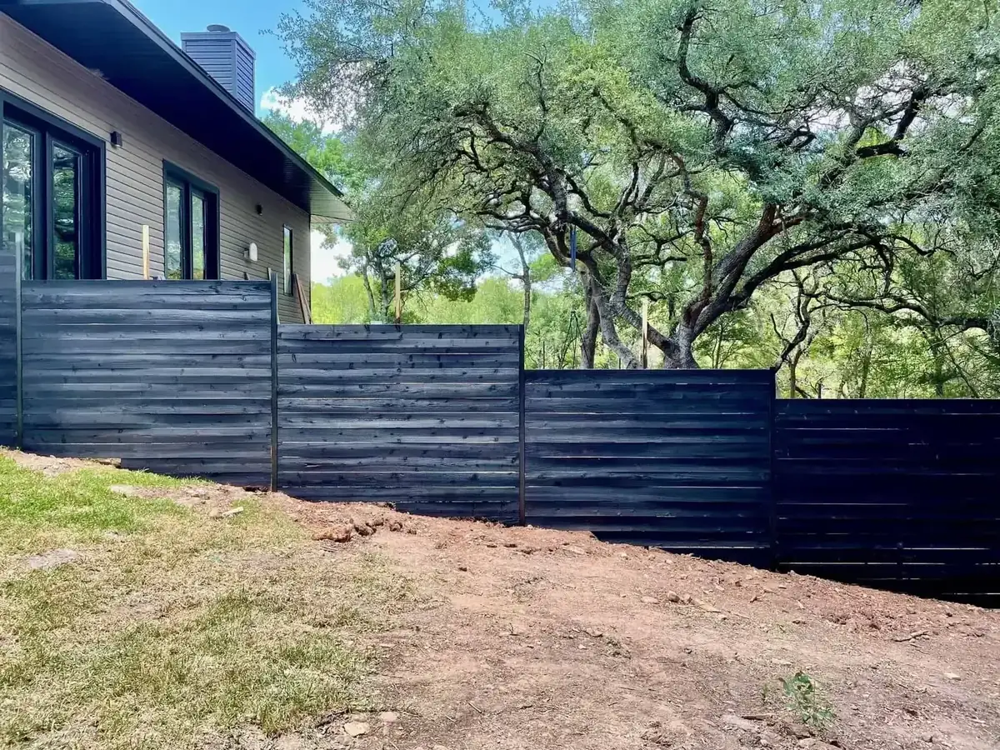

A privacy fence in Austin, TX can stand 6 feet tall on a property line, and the City lists three cases that need a permit: a floodplain, a fence above 7 feet, and a fence above 6 feet along a public street. Red Agave Landscape builds privacy fences in western red cedar and mild steel, with the boards run level from post to post. This post gives the City of Austin’s rules and shows the fences, gates, and screens we have built. Every one was built by our own crew.


How Tall Can a Privacy Fence Be in Austin?
Six feet on a property line, and taller in the cases below. The City calls a fence solid when more than 20 percent of it is solid material, so every privacy fence is a solid fence. These limits come from Austin Development Services’ page on fencing regulations.
| Where the fence stands | Tallest solid fence | Condition |
|---|---|---|
| On a property line | 6 feet | Measured from the natural grade up |
| On a property line with a slope | 7 feet | Where the grade changes at least 1 foot along that section of fence |
| On a property line, with the neighbors’ written consent | 8 feet | A grade change of at least 2 feet within 50 feet of the line, or a structure a child could climb to get over a 6-foot fence and reach a hazard such as a pool |
| On or inside the building setback lines | 8 feet | None listed |
| Along a public street | 6 feet without a permit | Taller needs a permit and a letter of authorization from the City. A public alley is not counted |
Does a Privacy Fence Need a Permit in Austin?
In three cases. The City requires a fence permit when the fence:
- stands in a floodplain, at any height
- is more than 7 feet high at any point
- is more than 6 feet high along a public street, other than a public alley
The City’s list of work exempt from building permits says the same from the other side: a fence that is not over 7 feet high, outside a flood hazard area, needs no building permit. A fence with no permit still has to follow every rule on the fencing page.
Three more checks come from that page:
- Corner lots: a solid fence needs approval from Austin Transportation and Public Works, so it does not block a driver’s view of traffic
- Trees: the City flags trees 19 inches or larger in diameter for a tree review
- Utilities: a fence cannot block a utility meter or a wastewater cleanout
Then comes the digging. Texas811 states that Texas law requires a call to 811 at least two business days before excavating, and it names building or repairing a fence as one of those jobs. We make the 811 call, verify the property line, and file the HOA application on every fence. Our fence permit guide has a checklist.
What Is Austin’s Safe Fencing Rule?
A design rule the Austin City Council passed on July 20, 2023. It covers home fences built from July 31, 2023 on.
- Allowed: flat-top fences
- Not allowed: spiked pickets or bars above the top rail
- Pickets above the top rail: less than 2 inches apart, or more than 9 inches apart
- Repairs: when more than 50 percent of the length of an existing fence is replaced, the whole fence has to meet the rule
Which Wood Lasts in a Privacy Fence?
Cedar. The USDA Forest Service’s Wood Handbook, in its chapter on the biodeterioration of wood, groups the heartwood of western redcedar as resistant to decay. It says wood in that group gives satisfactory service aboveground. The same chapter says the untreated sapwood of essentially all species has low decay resistance.
We build privacy fences in western red cedar. It takes stain well, and left alone it weathers to a silver gray. Gates and panels are framed in steel that we weld on site.
Outside its wildland-urban interface, the City does not regulate what a fence is made of. Inside it, Austin Fire’s WUI code page lists ignition-resistant or other approved materials for a fence within 10 feet of a building, and the fencing page adds that a fence taller than 6 feet there can need review.
What Privacy Fences and Screens Have We Built?
- Chestnut, East Austin: a horizontal cedar privacy fence closes a pool yard, and string lights trace the fence line. See the project.
- Austin: a new horizontal cedar fence, lit along its length, behind a gravel court
- A sloped lot: a black horizontal fence that steps down the hill in level sections
- A gate: weathered boards laid on the diagonal in a welded steel frame, beside a panel of the same boards run level
- A front yard: a white stucco wall topped with terracotta breeze blocks in a steel frame, with a gate of vertical wood boards
- East Austin: a steel trellis with wire grid panels that carries jasmine around a gravel fire court. See Signal Point.
- Cedar Park: a steel pergola built along a horizontal privacy fence


How Does a Privacy Fence Handle a Slope?
By stepping or by racking.
- Stepped: each section stays level, and the top of the fence drops at the posts. This suits horizontal boards, because every board stays level.
- Racked: the panels follow the angle of the ground.
Our black fence is stepped.

The City’s height rule allows for this. Where the grade changes at least 1 foot along a section of a solid fence, that part can be 7 feet tall. Where a slope has to be held and not only fenced, the wall comes first. See our retaining walls page.
When Is a Wall or a Trellis the Better Screen?
A wall, when the fence faces the street. A masonry wall gives a front yard a solid edge, and on the wall above, air and light pass through the breeze blocks at the top.
A trellis, in a narrow strip of ground. On Signal Point in East Austin, steel posts and rails carry wire grid panels around two sides of a raised gravel court, and jasmine climbs the panels behind the seating.

What Does a Privacy Fence Cost in Austin?
The length, the material, the height, the slope, the rock in the ground, and the gates drive the price. See our fence cost guide and our fences and gates page. Every Red Agave project starts with a free consultation, and the CAD plan is included.
What Sources Did We Use?
We read each of these in November 2026.
- City of Austin, Austin Development Services, Fencing Regulations
- City of Austin, Austin Development Services, Work Exempt from Building Permits
- City of Austin, Austin Fire Department, Wildland-Urban Interface Code
- USDA Forest Service, Forest Products Laboratory, Wood Handbook, Chapter 14, Biodeterioration of Wood
- Texas811
Questions We Hear
How tall can a privacy fence be in Austin?
Six feet along a property line, measured from the natural grade up. The City of Austin allows 7 feet where the grade changes at least 1 foot along that section of fence, and 8 feet on or inside the building setback lines.
Do I need a permit for a privacy fence in Austin?
The City of Austin requires a fence permit in three cases: the fence stands in a floodplain, it is more than 7 feet high at any point, or it is more than 6 feet high along a public street.
Is cedar a good wood for a privacy fence?
Yes. The USDA Forest Service’s Wood Handbook groups the heartwood of western redcedar as resistant to decay. Red Agave builds privacy fences in western red cedar.
Can a privacy fence follow a sloped yard?
Yes. A stepped fence keeps each section level and drops at the posts, and a racked fence follows the ground.
Who builds privacy fences in Austin, TX?
Red Agave Landscape, in western red cedar and mild steel. Every fence is built by our own crew and starts with a free consultation, with the CAD plan included.